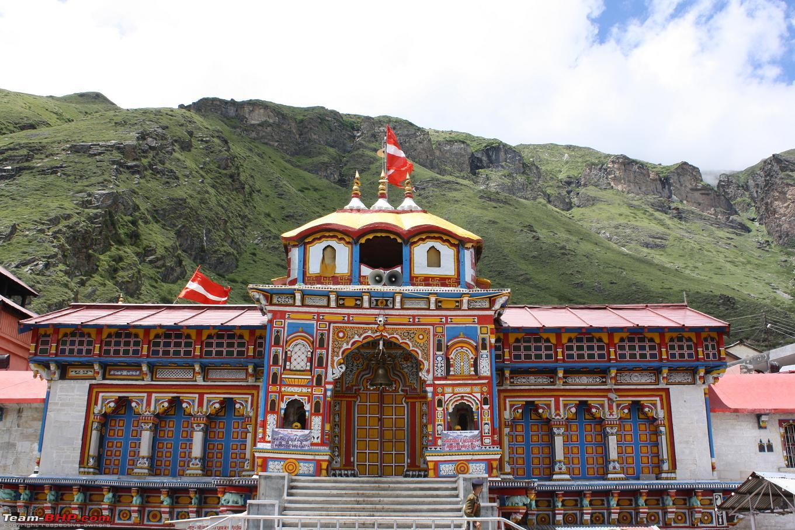
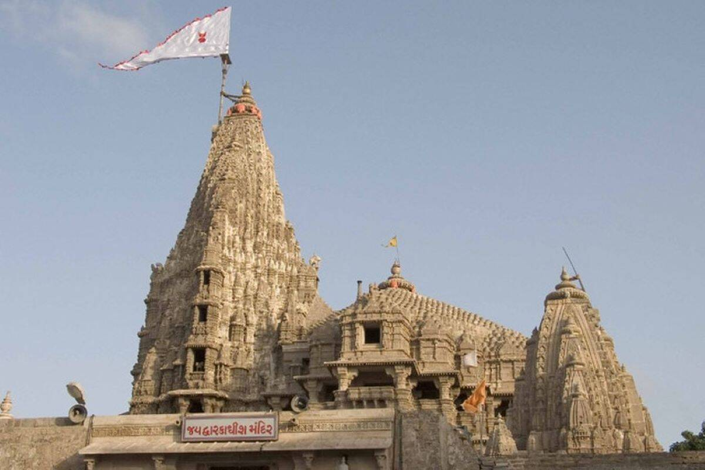

Badrinath-Dham

Dwarka

Jagannath Dham

Rameshwaram

Char Dham (4 Divine Abodes or Places) are considered highly sacred by Hindus to visit them during one's in their lifetime for spiritual importance and blessings of almighty before leaving the world after demise.
Char Dham (The four holy abodes) are the names of four well-known pilgrimage sites in India that are usually respected and visited by Hindus. The Char Dham includes Badrinath, Dwarka, Puri and Rameswaram. It is considered highly sanctified by Hindus to visit Char Dham during one's in their lifetime. The Char Dham is also defined by Adi Shankaracharya in different way and segregated as three Vaishnavite and one Shaivite pilgrimages.
As per the Hindu mythology, Badrinath became noticeable when Nar-Narayan, an avatar of Vishnu did Tapasya there. At that time the divine place was full of Plum trees. In Sanskrit language Plums are called Badri, so the divine abode was named Badrika-Van that is means the forest of Plums. The specific holy spot where the Nar-Narayan lived was so called Badri-Nath that is means the Lord of Plum forest. All this happened in the old time of the Sat-Yuga. As a result the Badrinath became the first Dham for all devotees.
The next divine abode, the Rameshwram got its significance in the time period of Treta-Yug when Ayodhya Lord Rama built a Shiv-ling here and worshipped it to get the blessings of Lord Shiva. The name Rameshwram means "the God of Lord Rama". Rama himself is considered an avatar of Lord Vishnu.
The third one is Dwarka Dhaam got its significance in the time period of Dwapar Yug when Lord Krishna - an avatar of Lord Vishnu, made Dwarka his residence in place of his birthplace Mathura.
The Four Shankaracharya Peeth (Seats) at the Chaar Dham as a school of Hinduism established at least four Hindu monastic institutions by Adi Shankaracharya. Shri Adi Shankaracharya managed the Hindu monks under four Maṭhas (Sanskrit: मठ) (monasteries) as Govardhana Pitham in east at Jagannatha Puri (Odisha), Sringeri Sarada Pitham in South at Sringeri (Tamil Nadu), Dvaraka Pitham in west at Dwarka (Gujarat) and Jyotirmatha Pitham in North at Badrikashrama (Uttarakhand).